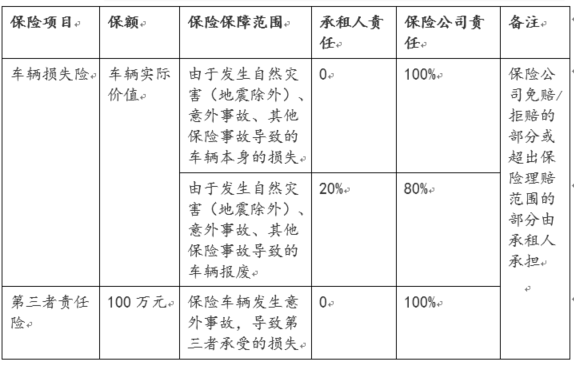
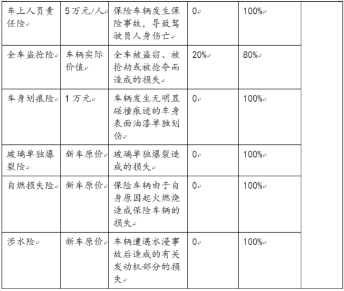

88共享出行租车协议
按照本协议的约定，上汽工会或其关联公司（“出租人”）将其所拥有的租赁车辆（“车辆”）在一定时间（“租期”）内出租给承租人（“承租人”）使用，承租人向出租人支付租金和费用（“服务”）。在通过本在线预订系统预订车辆以前，请确保您已经仔细阅读并完全理解了本协议的任何和所有内容，尤其是本协议中的粗体字部分。勾选“同意《88共享出行租车协议》”意味着您完全同意本协议的内容并愿意按照本协议的条件使用服务。
1. 会员
1.1 服务仅向经审核通过的会员提供。
1.2 成为会员应当满足如下条件：
1.2.1 年满18周岁；
1.2.2 持有有效的身份证件（包括二代身份证、港澳居民来往内地通行证、大陆通行证和护照/签证/居住证）；
1.2.3 持有有效的中国驾驶执照且该驾驶执照未因任何原因被暂停、吊销或失效等；
1.2.4 持有有效的信用卡；
1.2.5 是88共享出行客户公司或其关联公司的现任员工(如适用)；
1.2.6 通过出租人提供的基本试驾和驾驶测试（如有）；
1.2.7 出租人认为适当的其他条件。
出租人有权独立地决定“适当的其他条件”的范围和内容。1.3 在第一次使用服务前，承租人应当通过在线预订系统提交会员资格申请, 并承诺注册信息真实有效。出租人将对申请进行审核并决定是否接受该会员申请。出租人不因接受或拒绝某一特定会员申请人成为会员而承担任何形式的责任。
1.4 出租人有权根据其业务需要对某一特定会员的会员资格进行审核及调整。出租人不因该等审核和调整而承担任何形式的责任。
1.5 会员资格的终止不免除会员作为承租人而应向出租人承担的任何义务和责任。
2. 服务
2.1预订
2.1.1预订通过本在线预订系统进行，订单确认（详见第6条）后，出租人将为承租人保留车辆，除非按照本服务条款的约定订单被取消。
2.2订单取消
a. 承租人在距离订单所预约的租赁起始时间开始前的30分钟前取消订单的，承租人无需向出租人支付租金；
b. 承租人在距离订单所预约的租赁起始时间开始前的30分钟（含）内取消订单的，承租人仍应向出租人支付该订单项下应支付的时间费用的30%；
c. 承租人在订单所预约的租赁起始时间开始后取消订单的，承租人仍应向出租人支付订单项下应支付的时间费用的全额；
除上述外的其他订单取消原则，应以承租人预定时在线预订系统发布或更新的信息为准。2.3取车
2.3.1 承租人应当按照订单预订的时间提取预定车辆。
2.3.1 承租人应当按照订单预订的时间提取预定车辆。
2.3.2 出租人按照订单预定的时间开始计算租期和租金。承租人最早取车时间可比订单预定开始时间提前15分钟，承租人无需就该提前时段向出租人支付租；
2.3.3 若承租人延迟取车的，租期开始计算时间仍应按订单预订的时间开始计算租期和租金；
2.3.4 在通常情况下，出租人为预定汽油车辆加注充足油量。承租人亦可就近加注92号汽油，并向油站索取加油发票，订单结束并付款成功后，将该加油发票上传至88共享出行系统，待出租人审核通过后进行报销。如遇特殊情况可致电客服寻求指导帮助或拨打救援电话将续航里程不足的车辆归还至指定停车位。
2.3.5 承租人在驾车离开前，须先行熟悉车辆各种操作，包括但不限于门锁、危险警示灯、车灯、手刹等，并对车辆状况和随车物品进行检查，包括但不限于轮胎、轮毂、车身、发动机、行驶证、油卡等，如有任何异常，须立即向出租人报告。
2.4还车
2.4.1 承租人应将车辆规范的停放至合法的公共区域停车位。
2.4.2 还车前，承租人须对车辆状况和随车证件进行检查，包括但不限于轮胎、轮毂、车身、发动机、行驶证等，如有任何异常，须立即向出租人报告。
2.4.3 归还车辆前，承租人须检查是否有个人财物遗忘在车内，出租人不对承租人个人财物承担任何责任。
2.4.4 承租人归还车辆时应将车辆恢复至整洁干净无异味（包括但不限于烟味等）的状态，否则应按照本协议约定支付车辆清洁费用。
3. 双方声明与保证
3.1出租人声明与保证
3.1.1 出租人是按照中华人民共和国法律设立登记并有效存续的有限责任公司，具备从事汽车租赁业务的经营资格；
3.1.2 租赁车辆是出租人合法拥有的财产（但其上已合法设定抵押权），出租人已完成必要的政府手续，可以将租赁车辆用于租赁目的；
3.1.3 出租人已为租赁车辆办理了必要的车辆登记及保险，车辆行驶证、保险卡、交强险标、年检标志等齐全并已按规定放置或粘贴；
3.1.4 租赁车辆经出租人定期保养、检修及安全检查；
3.1.5 灭火器、故障警示牌、随车工具等齐全完好；
3.1.6 在将车辆出租给承租人使用的过程中，出租人及88共享出行合作方上汽工会可能将接触到承租人的个人信息，包括实时位置信息以及行驶轨迹信息，除非应法律的要求或者为维护承租人和出租人的合法的人身和财产权利的目的，出租人及88共享出行合作方上汽工会将不向第三人提供这些信息，也不会将这些信息用于车辆出租目的以外的任何其他用途。尽管有前述约定，但承租人在此明确认可并同意如下：出租人可以将承租人的信息分享给其所在公司或园区。但出租人及88共享出行合作方上汽工会不打算也无意收集国家安全相关信息，如果承租人提供的信息有任何涉及这方面，须及时告知出租人，出租人及88共享出行合作方上汽工会将对此不予收集
3.1.7 出租人确认，除非中国法律另有规定，其因通过本在线预订系统提供服务过程中所遭受的任何损失和损害应由出租人与承租人或其他相关的第三方协商解决。
3.1.8 出租人享有车辆所有权，并有权在租赁期间的任何时间检查租赁车辆的行驶状况和停放地点。当出租人认为租赁车辆的安全及相关利益受到损害时，有权提前终止租赁收回车辆并向承租方索赔，收车过程中的发生的费用由承租方承担。
3.2承租人声明与保证
3.2.1 其已年满18周岁；并
3.2.2 合法持有以下证件：
(i) 有效身份证件，包括二代身份证、港澳居民来往内地通行证、大陆通行证和护照/签证/居住证；
(ii) 本人国内有效驾驶证。
3.2.3 不论他人是否有合法驾驶执照，承租人不会将车辆交给他人驾驶。承租人应对将车辆交由他人驾驶而给出租人造成的任何和所有损失承担赔偿责任；
3.2.4 在租期内，承租人仅拥有使用车辆的权利，承租人不会将车辆进行转卖、抵押、质押、典当、转借、转租或任何其他形式的处分；
3.2.5 承租人不会将车辆用于任何非法用途或用于实现任何非法目的；
3.2.6 承租人确认，除非中国法律另有规定，其因通过本在线预订系统预定车辆和/或在使用车辆的过程中所遭受的任何损失和损害应由承租人与出租人或其他相关的第三方协商解决。
3.2.7 承租人应保证其具有租赁车辆的资格和驾驶车辆的完全能力，任何因其资格的缺失或能力的缺乏而造成的任何损失均由承租人自行承担。若出租人或其合作伙伴因此遭受任何损失的，承租人应全额赔偿给出租人或其合作伙伴。
3.2.8 承租人应保证其向出租人提供的一切资料的准确性和完整性，任何因其资料的不完整或不准确而造成的出租人的任何损失，承租人应全额赔偿给出租人或其合作伙伴。
3.2.9 承租人应当认可出租人在线预定系统的局限性，比如特殊时间段内系统可能无法为其生成某个或某类订单。承租人无权因此局限性而向出租人主张任何形式的赔偿。
4. 租期
4.1租期最短应为30分钟；
4.2租期超过30分钟的，出租人应以分钟作为计算时间费用的计价单位；
4.3出租人提供的具体租赁套餐或折扣优惠应以其在线预订系统不时发布或更新信息为准。
4.4 “工作日”指每周周一至周五。遇节假日调休的，以政府公布的调休方案为准。工作日的“日间”所涵盖时间段范围为早上9点至下午6点，“夜间”所涵盖的时间段范围为下午6点至次日早上9点，出租人与承租人所在的园区或所属的企业有特别约定的除外。出租人有权对工作日“日间”和“夜间”时间段范围进行不时的修改，以在线预订系统实时公布的信息为准。
4.5 “节假日”指中国法定节日和假日。
5. 租金与费用
5.1租金
租金由三部分组成：以时间为计价单位的费用（“时间费用”）/套餐价格、里程费和实际燃油费。5.2 时间费用的单价和套餐价格均以承租人预订时的在线预订系统实时公布的价格为准。
5.3 里程费
里程费=每公里单价×实际行驶里程数。 实际行驶里程数指从取车离开站点起至还车到达站点止的行驶里程数，以车载设备（TBOX）所记录为准。 实际行驶里程数没有限制。 每公里单价以承租人预订时的在线预订系统实时公布的价格为准。5.4 费用
出现以下情形时，承租人还应向出租人缴纳如下费用。若承租人未能按时足额缴纳的，出租人有权暂停其会员资格，直至缴清所有欠款。5.4.1 违章罚款
订单结束后，承租人须自行查询违章，出租人将提供必要的协助。承租人应在实际还车之日起的14日内自行处理完违章，并上传违章处理凭证，以便出租人及时清除违章记录； 在距离实际还车时间的14日以外未被处理的违章，将被视为违约行为。 对于扣分小于6分的违章行为，承租人须向出租人支付违章罚款及其滞纳金（如有）、违约金50元/笔、如涉及违章扣分的，出租人将按照200元/分收取；对于扣分大于等于6分的严重违章行为，承租人须向出租人支付违章保证金2000元，并在规定时间内自行处理违章，出租人核实后将违章保证金退还承租人，未按规定处理的，出租人有权不予以退还违章保证金； 出租人有权向承租人追述未能及时查询和处理的违章罚款及相关责任。5.4.2 停运损失费
若由于承租人原因导致车辆无法正常运营的，包括但不限于车辆证件丢失、车辆被扣、维修、未关灯导致车辆没电等，承租人须向出租人支付停运损失费。停运损失费从出租人将所涉车辆交付维修时或者车辆无法正常运营时开始计算直至所涉车辆重新投入正常运营为止，每24小时100元，直至车辆重新投入使用。停运时间不满24小时，视为24小时，停运损失费每月最高不超过3000元。5.4.3 事故有关费用
车辆在租期内发生交通事故的，承租人须为包括但不限于以下情形垫付或承担费用，并将相关发票和清单在事故涉及的全部车辆维修完成后提交给出租人。出租人以保险公司理赔结束后给付的理赔额为限对承租人垫付的费用进行报销。保险不能涵盖的部分应由各方按照本协议约定予以承担。(i) 本车保险理赔材料不齐的情况下，承租人须垫付本车维修费用；
(ii) 若承租人自身或第三者受到伤害的，承租人需垫付医疗救助费用；
(iii) 第三者受损车辆自行选择维修地点的，承租人须自行与第三者协商其受损车辆维修费用垫付事宜；
(iv) 若涉及公共设施损坏的，承租人须垫付相关修复费用；
(v) 若因承租方全责事故导致本车定损额超过20,000元（含）的，承租人须为此向出租人支付车辆加速折旧费，车辆加速折旧费支付标准为保险公司定损额的20%；
(vi) 承租人需垫付与事故相关的其它费用，包括但不限于拖车费、施救费、车损评估费及交通管理部门或其他机构所要求支付的费用等。
未经出租人同意，承租人不得维修车辆，如因承租人擅自维修车辆造成损失，承租人应当向出租人承担赔偿责任。5.4.4 随车物品损失费
随车物品包括但不限于车辆行驶证、灭火器、随车工具等。承租人如对随车物品造成损失，应按照实际修复或补办价格对出租人进行赔偿。5.4.5 车辆停放不当损失费
还车时，若承租人未按规定将车辆停放在合法的公共区域停车位的，将被收取100元罚金。涉及拖车或违章停车的，出租人按实际发生费用向承租人收取。5.4.6 车辆被盗或报废损失费
在租期内发生车辆盗抢或报废，承租人仍应支付公安机关立案或车管部门出具报废证明之前的所有车辆租金和费用。5.4.7 车辆清洁费
承租人还车时若未能将车辆恢复至整洁干净无异味的状态（包括但不限于车辆内有烟味等非车辆本身的气味、车内有各种垃圾或脏污等），承租人有权收取车辆清洁费50元/次。5.4.8 其他费用
承租人应对给出租人造成的其他损失进行赔偿。6. 结算与付款
6.1承租人应当通过出租人认可的支付方式及时足额地支付租金、罚款、违约金等所有相关费用。
6.2 承租人如需发票，可通过88共享出行在线系统提出申请，出租人根据申请和订单提供相应金额发票。
6.3 承租人应于在线预订系统建立订单后全额支付押金，押金金额以在线预订系统显示的数额为准。如果承租人未能按时支付押金，订单自动取消且不产生任何费用。但承租人可以再次建立订单。（如适用）
6.4经支付押金的订单为确认订单。（如适用）
6.5 承租人还车时，出租人与承租人按照实际发生的租金和费用金额进行结算。承租人应按时足额支付租车费用，并及时处理违章及其他承租人应履行的义务（如有）。
6.6 正常情况下出租人将在订单成功结算后的一个月后开始办理押金退还,如期间有新增订单，押金退还时间以最后一个订单成功结算时间为准。押金成功退还后，承租人在建立新订单时需重新支付押金。（如适用）
6.7 押金和其他付款应通过承租人个人绑定的信用卡（如适用)或“支付宝”或“微信”账号支付。除非出租人和承租人另行同意，其他方式付款不产生付款的效果。
6.8 所有付款或退款均按照“支付宝”或“微信”或其他第三方支付平台的流程和规则进行。本第6条中的“按时”和“即时”指付款方按照“支付宝”或“微信”或其他付款方式的流程和规则发起付款的时间。退款以第三方支付平台退款政策和退款周期为准。
6.9 承租人未能及时足额支付本协议项下约定的费用，出租人有权通过承租人绑定的信用卡刷取相关费用。（如适用）
7. 保险与救援
7.1保险责任
7.1.1 保险
保险覆盖的范围、出租人、承租人及保险公司各自应承担的责任如下（以实际保险条款为准）  7.1.2 不计免赔
出租人已为车辆购买了不计免赔，不计免赔覆盖的范围包括车辆损失险、第三者责任险、车上人员责任险、全车盗抢险和车身划痕险（以保单为准）。7.1.3 保险免赔、保险理赔范围外、超出理赔费用上限的费用及因承租人未履行有关报案流程、理赔手续等而导致保险公司拒赔的损失由承租人承担。
7.1.4 在以下情况及保险公司不予理赔的任何其他情况下，所有损失由承租人承担：
(i) 饮酒后驾驶车辆的；
(ii) 无证驾驶车辆，或持逾期未审验的驾驶执照驾驶车辆的；
(iii) 车辆行驶到水深处，发动机熄火后，驾驶员强行打火造成的扩大部分损失的；
(iv) 未经定损直接维修车辆产生的费用；
(v) 未在事故发生后48小时内报案或擅自对车辆进行维修的；
（vi） 轮胎单独损坏的；
（vii）事故发生后驾车逃逸的。
7.1.5 出险后，承租人应当注意安全，立即致电88共享出行客服热线以获取出租人事故处理指导和协助。
7.1.6 为避免保险公司拒赔或者视为放弃理赔，承租人应在出险之日起15日内将齐全的保险理赔材料提供给出租人。承租人应对因承租人未能按时向出租人提交齐全的理赔材料而导致任何出租人的损失承担赔偿责任。
7.2救援
保险公司将负责提供救援服务，对于具体的救援请求，保险公司将根据购买保险时或之后约定的时间提供救援服务。 出租人将按照实际情况独立决定是否提供备用车辆，但出租人不为是否提供备用车辆承担任何义务和责任。8. 争议解决
出租人和承租人之间因租赁车辆而产生的或与之相关的任何争议均应当通过友好协商的方式解决，协商未成的，任何一方均有权向中国国际经济贸易仲裁委员会提交仲裁，仲裁地为上海，仲裁语言为中文，仲裁裁决为终局的且对双方均有约束力。败诉一方将承担仲裁费用。9. 协议修改
出租人保留不时地对本协议进行修改的权利。任何修改后的版本都将公布在88共享出行网站上并且在出租人以短信形式通知承租人该等变更之日起的七日后立即生效。承租人应确保其通讯方式的时效性，任何因手机号的失效导致的短信发送失败，均不影响本协议变更的生效。